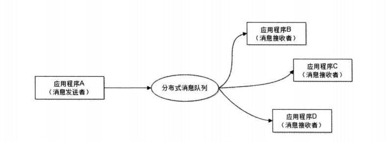

达到沟通目的才算有效沟通
概述
在上家公司工作的时候，ZStack架构的设计中用到RabbitMQ，让一个服务混乱的项目，变得简洁而清晰。所以对MQ又进一步进行研究。
什么是消息队列
我们可以把消息队列比作是一个存放消息的容器，当我们需要使用消息的时候可以取出消息供自己使用。消息队列是分布式系统中重要的组件，使用消息队列主要是为了通过异步处理提高系统性能和削峰、降低系统耦合性。
因为队列 Queue 是一种先进先出的数据结构，所以消费消息时也是按照顺序来消费的。消息队列管理器在将消息从它的源中继到它的目标时充当中间人。队列的主要目的是提供路由并保证消息的传递；如果发送消息时接收者不可用，消息队列会保留消息，直到可以成功地传递它。
为什么要用消息队列
使用消息队列主要有两点好处：1.通过异步处理提高系统性能（削峰、减少响应所需时间）; 2.降低系统耦合性。
(1) 通过异步处理提高系统性能（削峰、减少响应所需时间）
如上图，在不使用消息队列服务器的时候，用户的请求数据直接写入数据库，在高并发的情况下数据库压力剧增，使得响应速度变慢。但是在使用消息队列之后，用户的请求数据发送给消息队列之后立即 返回，再由消息队列的消费者进程从消息队列中获取数据，异步写入数据库。由于消息队列服务器处理速度快于数据库（消息队列也比数据库有更好的伸缩性），因此响应速度得到大幅改善。
通过以上分析我们可以得出消息队列具有很好的削峰作用的功能——即通过异步处理，将短时间高并发产生的事务消息存储在消息队列中，从而削平高峰期的并发事务。 举例：在电子商务一些秒杀、促销活动中，合理使用消息队列可以有效抵御促销活动刚开始大量订单涌入对系统的冲击。如下图所示：
因为用户请求数据写入消息队列之后就立即返回给用户了，但是请求数据在后续的业务校验、写数据库等操作中可能失败。因此使用消息队列进行异步处理之后，需要适当修改业务流程进行配合，比如用户在提交订单之后，订单数据写入消息队列，不能立即返回用户订单提交成功，需要在消息队列的订单消费者进程真正处理完该订单之后，甚至出库后，再通过电子邮件或短信通知用户订单成功，以免交易纠纷。这就类似我们平时手机订火车票和电影票。
(2) 降低系统耦合性
我们知道如果模块之间不存在直接调用，那么新增模块或者修改模块就对其他模块影响较小，这样系统的可扩展性无疑更好一些。
我们最常见的事件驱动架构类似生产者消费者模式，在大型网站中通常用利用消息队列实现事件驱动结构。如下图所示：

消息队列使利用发布-订阅模式工作，消息发送者（生产者）发布消息，一个或多个消息接受者（消费者）订阅消息。 从上图可以看到消息发送者（生产者）和消息接受者（消费者）之间没有直接耦合，消息发送者将消息发送至分布式消息队列即结束对消息的处理，消息接受者从分布式消息队列获取该消息后进行后续处理，并不需要知道该消息从何而来。对新增业务，只要对该类消息感兴趣，即可订阅该消息，对原有系统和业务没有任何影响，从而实现网站业务的可扩展性设计。
消息接受者对消息进行过滤、处理、包装后，构造成一个新的消息类型，将消息继续发送出去，等待其他消息接受者订阅该消息。因此基于事件（消息对象）驱动的业务架构可以是一系列流程。
另外为了避免消息队列服务器宕机造成消息丢失，会将成功发送到消息队列的消息存储在消息生产者服务器上，等消息真正被消费者服务器处理后才删除消息。在消息队列服务器宕机后，生产者服务器会选择分布式消息队列服务器集群中的其他服务器发布消息。
备注： 在解耦这个特定业务环境下是使用发布-订阅模式的。除了发布-订阅模式，还有点对点订阅模式（一个消息只有一个消费者），我们比较常用的是发布-订阅模式。 另外，这两种消息模型是 JMS 提供的，AMQP 协议还提供了 5 种消息模型。
消息队列带来的问题
- 系统可用性降低： 系统可用性在某种程度上降低，为什么这样说呢？在加入MQ之前，你不用考虑消息丢失或者说MQ挂掉等等的情况，但是，引入MQ之后你就需要去考虑了！
- 系统复杂性提高： 加入MQ之后，你需要保证消息没有被重复消费、处理消息丢失的情况、保证消息传递的顺序性等等问题！
- 一致性问题：我上面讲了消息队列可以实现异步，消息队列带来的异步确实可以提高系统响应速度。但是，万一消息的真正消费者并没有正确消费消息怎么办？这样就会导致数据不一致的情况了!
JMS 和AMQP比较
JMS
JMS（JAVA Message Service,java消息服务）是java的消息服务，JMS的客户端之间可以通过JMS服务进行异步的消息传输。JMS（JAVA Message Service,Java消息服务）API是一个消息服务的标准或者说是规范，允许应用程序组件基于JavaEE平台创建、发送、接收和读取消息。它使分布式通信耦合度更低，消息服务更加可靠以及异步性。
jms是消息队列中提供的一组API 接口，是提供的服务API。
JMS和JDBC担任差不多的角色，用户都是根据相应的接口可以和实现了JMS的服务进行通信，进行相关的操作。ActiveMQ 就是基于 JMS 规范实现的。
JMS两种消息模型
①点到点（P2P）模型
使用队列（Queue）作为消息通信载体；满足生产者与消费者模式，一条消息只能被一个消费者使用，未被消费的消息在队列中保留直到被消费或超时。比如：我们生产者发送100条消息的话，两个消费者来消费一般情况下两个消费者会按照消息发送的顺序各自消费一半（也就是你一个我一个的消费。）
② 发布/订阅（Pub/Sub）模型
发布订阅模型（Pub/Sub） 使用主题（Topic）作为消息通信载体，类似于广播模式；发布者发布一条消息，该消息通过主题传递给所有的订阅者，在一条消息广播之后才订阅的用户则是收不到该条消息的。
JMS 五种不同的消息正文格式
JMS定义了五种不同的消息正文格式，以及调用的消息类型，允许你发送并接收以一些不同形式的数据，提供现有消息格式的一些级别的兼容性。
- StreamMessage –Java原始值的数据流
- MapMessage–一套名称-值对
- TextMessage–一个字符串对象
- ObjectMessage–一个序列化的Java对象
- BytesMessage–一个字节的数据流
AMQP
AMQP，即Advanced Message Queuing Protocol,一个提供统一消息服务的应用层标准 高级消息队列协议（二进制应用层协议），是应用层协议的一个开放标准,为面向消息的中间件设计，兼容 JMS。基于此协议的客户端与消息中间件可传递消息，并不受客户端/中间件同产品，不同的开发语言等条件的限制。RabbitMQ 就是基于 AMQP 协议实现的。
AMQP模型
AMPQ的消息模型示意图如下：
运作过程
左边的客户端向右边的客户发送消息，流程如下：
- 获取Connection（客户端到MQ服务器的TCP链路）
- 获取Channel（逻辑层的链路，基于Conncetion）
- 定义交换器、队列
- 使用一个RoutingKey将队列绑定到一个交换器
- 通过指定一个交换器和一个RoutingKey来消息发送到对应的队列上
- 接收方在接受时也是获取Connection，接着获取Channel，然后指定一个队列直接到它关心的队列上取消息，它对交换器、RoutingKey及如何绑定都不关心，到对应的对列上取消息就行了
名词解释
在该模型中，三个主要功能模块连接成一个处理链完成预期的功能：
- exchange（交换器）：接收发布应用程序发送的消息，并根据一定的规则将这些消息路由到“消息队列”。
- message queue（消息队列）：存储消息，直到这些消息被消费者安全处理完为止。
- binding（绑定器）：定义了exchange和message queue之间的关联，提供路由规则。
Exchange本身不保持消息，只是起到路由的作用，Exchange接收消息生产者（MessageProducer）发送的消息根据不同的路由算法将消息发送往MessageQueue。MessageQueue会在消息不能被正常消费时缓存这些消息，具体的缓存策略由实现者决定，当MessageQueue与消息消费者（Messageconsumer）之间的连接通畅时，MessageQueue会将消息转发到consumer。
AMQP架构图如下：
该图（VirtualHost）用来指Exchange和MessageQueue组成的集合。它是一个虚拟概念，一个虚拟主机可以是一台服务器，还可以是由多台服务器组成的集群，还可以是一些虚拟机组成的集群，上面运行一些Exchange和MessageQueue。
JMS vs AMQP
总结
AMQP 为消息定义了线路层（wire-level protocol）的协议，而JMS所定义的是API规范。在 Java 体系中，多个client均可以通过JMS进行交互，不需要应用修改代码，但是其对跨平台的支持较差。而AMQP天然具有跨平台、跨语言特性。
JMS 支持TextMessage、MapMessage 等复杂的消息类型；而 AMQP 仅支持 byte[] 消息类型（复杂的类型可序列化后发送）。
由于Exchange 提供的路由算法，AMQP可以提供多样化的路由方式来传递消息到消息队列，而 JMS 仅支持 队列 和 主题/订阅 方式两种。
常见消息队列
MQ在实际项目中的使用
openStack中的MQ
OpenStack遵循这样的设计原则：项目之间通过RESTful API进行通信；项目内部，不同服务进程之间的通信，则必须要通过消息总线。这种设计思想保证了各个项目对外提供服务的接口可以被不同类型的客户端高效支持，同时也保证了项目内部通信接口的可扩展性和可靠性，以支持大规模的部署。
软件从最初的面向过程，面向对象，再到面向服务（SOA），要求我们去考虑各个服务之间如何传递消息。借鉴硬件总线的概念，消息总线的模式被引入，顾名思义，一些服务向总线发送消息，其他服务从总线上获取消息。
OpenStack oslo.messageing库实现了以下两种方式来完成项目内部各服务进程之间的通信：
- 远程过程调用（RPC，Remote Procedure Call）
通过远程过程调用，一个服务进程可以调用其他远程服务进程方法，并且有两种调用方式：call和cast。call 则是同步执行的，调用者会被阻塞直到结果返回；cast 则是异步执行，结果不会立刻被返回，调用者也不会被阻塞，但是调用者需要利用其他方式查询这次远程调用的结果。
- 事件通知（Event Notification）
某个服务进程可以把事件通知发送到消息总线上，该消息总线上所有对此类事件感兴趣的服务进程，都可以获得此事件通知并进行一步的处理，处理的结果并不会返回给事件发送者。这种通信方式，不但可以在同一个项目内部的各个服务进程之间发送通知，也可以实现跨项目之间的通知发送。Ceilometer就通过这种方式大量获取其他OpenStack项目的事件通知，从而进行计量和监控。
事件通知的方式在ZStack中也有体现：如下图所示：MQ用作消息总线
OpenStack中的通信方式
OpenStack中所支持的消息总线类型中，大部分都是基于AMQP的。前面已经提到过了。
基于AMPQ实现RPC
这里引用别人画好的图：如下图

- 客户端发送一个请求消息给Exchange，指定routing key为”op_queue”，同时指明一个消息队列名用来获取响应，图中为”res_queue”，同时指明一个消息队列名用来获取响应。在图中为”res_queue”
- Exchange把此消息转发到消息队列op_queue
- 消息队列op_queue把消息推送给服务端，服务端执行此RPC调用对应的任务。执行结束后，服务端把相应结果发送给消息队列，指明routing key为”res_queue”
- Exchange 把此消息转发到消息队列res_queue
- 客户端从消息队列res_queue中获取响应。